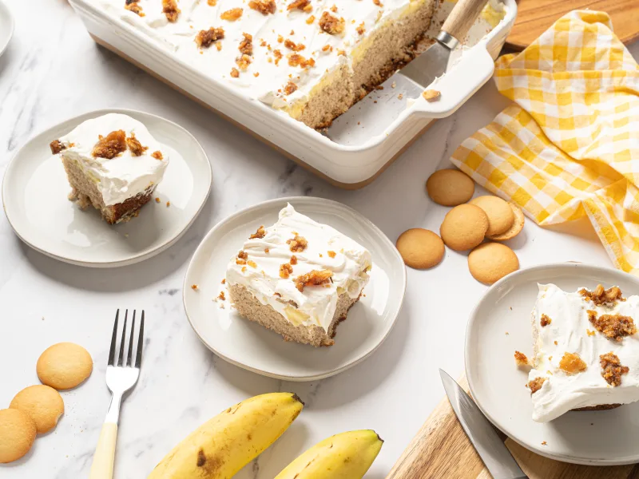

-

Banana Pudding Cake
Ingredients
- Yellow Cake Mix - 1 packet
- Water - 1 cup
- Eggs - 3
- Vegetable Oil - 1/3 cup
- Banana Pudding Mix - 2 sachets
- Milk - 4 cups
- Vanilla Wafers - 20, crushed
- Whipped Cream/Topping
Method of Preparation
Preheat oven to 350°F. In a bowl, add yellow cake mix, water, eggs, oil and mix thoroughly. Pour into a prepared pan and bake for 34-38 minutes.
In another bowl, mix the yellow pudding and milk. Rest for 2 minutes.
Bring the cake out and poke holes into it. Pour mix on the cake, smoothen and chill for 2 hours.
Add whipped cream or topping and crushed vanilla wafers. Serve.